<div #section1 class="first-section-wrapper">
  <div class="v-verse-logo-center">
    
  </div>
  <div class="first-section-v-verse-menu-container">
    <!-- (mouseleave)="closeMenu()" -->

    <div class="first-section-v-verse-logo" (mouseenter)="openMenu()">
      
    </div>
    <div
      class="first-section-v-verse-menu"
      (mouseenter)="openMenu()"
      (mouseleave)="closeMenu()"
      *ngIf="isOpen"
      [@dropDownMenu]
    >
      <ul>
        <li (click)="okay()">
          <a><h5>Home</h5></a>
        </li>
        <li (click)="okayImReady(caseStudySection)">
          <a><h5>CASE STUDIES</h5> </a>
        </li>
        <li (click)="okayImReady(demoSection)">
          <a><h5>DEMO</h5></a>
        </li>
        <li (click)="okayImReady(posibilitiesSection)">
          <a><h5>POSIBILITIES</h5></a>
        </li>
        <li (click)="okayImReady(contactSection)">
          <a><h5>CONTACT</h5></a>
        </li>
      </ul>
    </div>
  </div>

  <div class="case-studies-text" (click)="okayImReady(caseStudySection)">
    <h4>CASE STUDIES</h4>
  </div>

  <ng-container *ngIf="isWaveText">
    <div class="wave-text" #waveText2>
      <svg
        version="1.1"
        id="Layer_1"
        xmlns="http://www.w3.org/2000/svg"
        xmlns:xlink="http://www.w3.org/1999/xlink"
        x="0px"
        y="0px"
        viewBox="0 0 1920 1080"
        xml:space="preserve"
      >
        <style type="text/css">
          .st0 {
            fill: none;
          }
        </style>
        <g>
          <path
            id="SVGID_x5F_1_x5F__1_"
            class="st0"
            d="M217.12,468.44c356.67,174.78,586.99,159.27,732.68,110.7
    c71.62-23.88,117.63-54.03,219.95-80.11c213.56-54.45,405.15-23.08,533.12,11.65"
          />
          <text>
            <textPath xlink:href="#SVGID_x5F_1_x5F__1_" startOffset="0%">
              <tspan
                style="fill: #ffffff; font-family: 'BigJohn'; font-size: 60px"
              >
                Diving into the undiscovered world
              </tspan>
              <animate
                attributeName="startOffset"
                from="-100%"
                to="0%"
                begin="0s"
                dur="2s"
              />
            </textPath>
          </text>
        </g>
      </svg>
    </div>
  </ng-container>
  <div class="first-section-home-logo">
    
    <h4>HOME</h4>
  </div>
  <div class="first-section-demo-gif">
    
  </div>
  <div class="first-section-image">
    <ng-container *ngIf="isMobile == false">
      <video
        class="landing-video-bg"
        src="../assets/videos/home-video.mp4"
        autoplay
        muted
        playsinline
        loop
        #homeVideo
      ></video>
    </ng-container>

    <ng-container *ngIf="isMobile == true">
      <video
        class="landing-video-bg"
        src="../assets/videos/mobile-home-video.mp4"
        autoplay
        muted
        playsinline
        loop
        #homeVideo
      ></video>
    </ng-container>
  </div>
</div>
<div #caseStudySection>
  <app-client-sliders></app-client-sliders>
</div>
<div #demoSection>
  <app-creative-excellence></app-creative-excellence>
</div>
<div #posibilitiesSection>
  <app-possibilities></app-possibilities>
</div>
<div #contactSection>
  <app-contact></app-contact>
</div>
<app-footer></app-footer>
